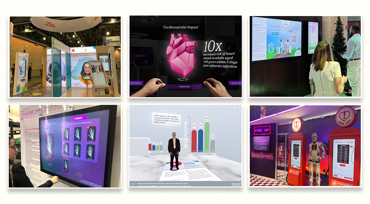
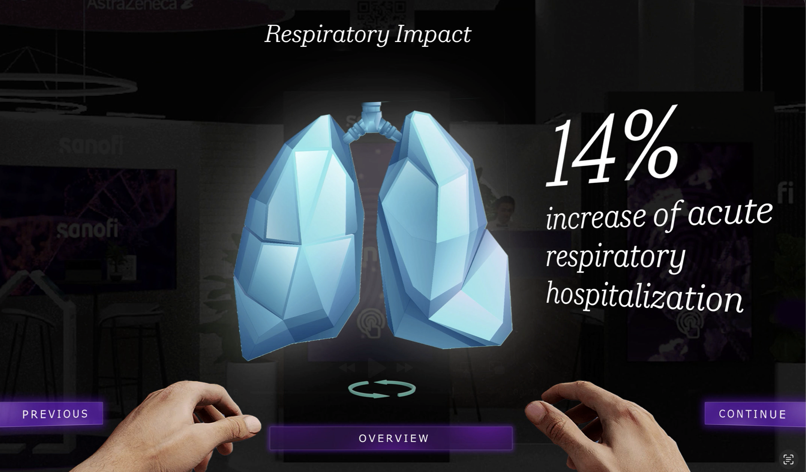
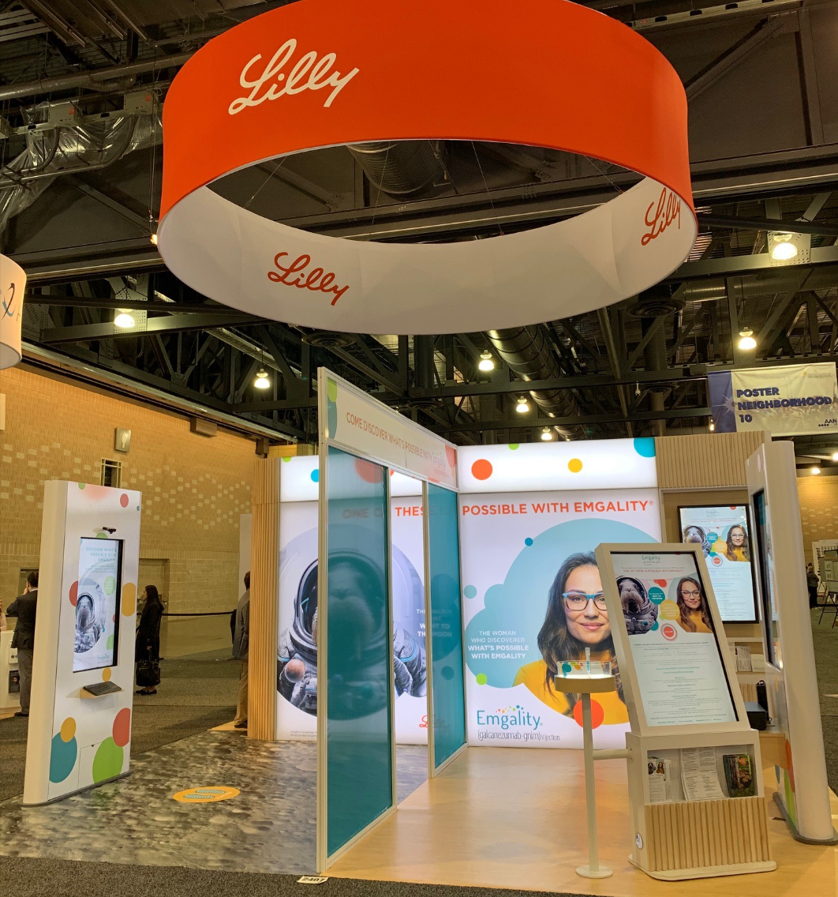
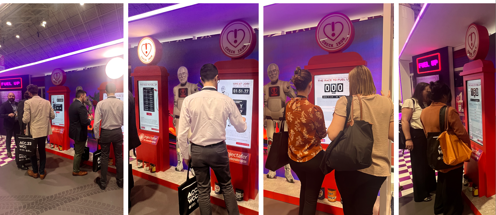

Through the course of my time as a user experience professional, I have had the pleasure of leading digital tactics for several experiential executions. These projects were conducted in a variety of settings, including conferences, in-person presentations and trade shows.

These projects involve designing WCAG-compliant user experiences that are also in compliance with the physical ADA requirements. As UX architect is is my responsibility to lead discovery with accessibility leads to ensure that the team's early concepts are within industry standards.
For AR, VR and AVP tactics, the primary challenge was creating an AR interface that users could confidently navigate in real-time conference environments and in consultations while maintaining the scientific rigor required for pharmaceutical communications.
For interactive touch screens and presentations, the challenge was designing interfaces that are intuitive, engaging, and accessible while supporting complex content and interactions.
The AR/VR experiences center on intuitive gesture controls and spatial navigation that feel natural even to first-time AR users. Sales representatives can seamlessly transition between different modules—mechanism of action, clinical data, patient profiles—using simple tap and swipe interactions.
Interactive screens can leverage a more tactile approach and, real-world heuristics like visibility, line of sight and unique event requirements to create intuitive and engaging user experiences.
All experiential design projects required close collaboration with medical, legal, and regulatory teams to ensure all content met pharmaceutical industry standards while leveraging the unique affordances of spatial computing and industry-leading interactivity functionality.
Various
Experiential Design
Augmented Reality
XR Strategy
Senior UX Architect
2021-2025
Augmented Reality
iOS
Spatial UX
3D Visualization
Stakeholder interviews
XR User Flows
Interaction Design
Wireframes
Prototypes


